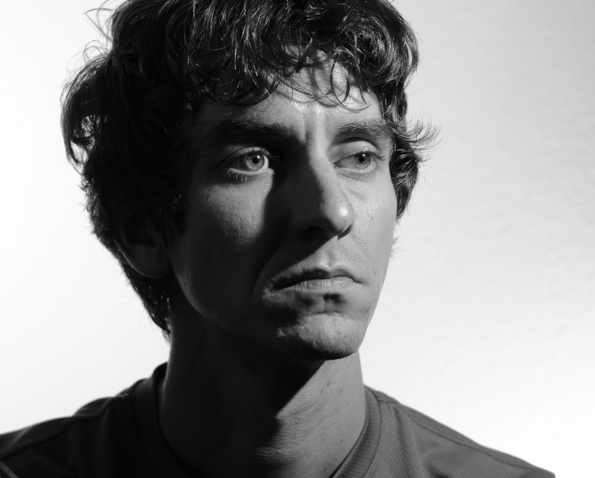

About Me

Welcome! Thank you for visiting my page. I am lucky to live and work in wonderful Austin Texas! I fell in love with the city while getting my mechanical engineering degree from THE University of Texas but was forced to move to the DFW area for my first post college gig in 2009. After 18 months in a sort of city cowboy hell I was able to move back to Austin and enter a truly corporate job at Samsung Austin Semiconductor. Samsung was a tremendous learning experience where I examined large data sets to identify areas of potential improvement gains and used LEAN and Six Sigma methodologies to organize large multi-department problem solving efforts. Using the knowledge of LEAN gained from Samsung I was offered the chance to work for Silicon Audio helping them design and ramp the production of an optical seismometer. My success and happiness in this role opened my eyes to the world life benefits and varied challenges that come with working in a small startup environment.
Currently I am consulting on the thermal and submarine designs for Stone Aerospace and attending the University of Texas Code Bootcamp. My main goal for attending the camp is to expand my skillset in order to make myself more marketable to the interesting world of software development that is driving the Austin market. The camp is a six month commitment (through the end of January 2018).